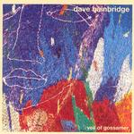

| Artist: | Dave Bainbridge |
| Title: | Veil Of Gossamer |
| Label: | Open Sky |
| Length(s): | 64 minutes |
| Year(s) of release: | 2004 |
| Month of review: | [04/2005] |
| 1) | Chanting Waves | 2.17 |
| 2) | Over The Waters | 7.29 |
| 3) | Veil Of Gossamer | 4.56 |
| 4) | The Seen And The Unseen | 2.17 |
| 5) | The Everlasting Hills Part 1 | 5.37 |
| 6) | The Everlasting Hills Part 2 | 2.34 |
| 7) | The Everlasting Hills Part 3 | 3.55 |
| 8) | The Everlasting Hills Part 4 | 2.54 |
| 9) | The Everlasting Hills Part 5 | 4.47 |
| 10) | Seahouses | 3.06 |
| 11) | Until The Tide Turns | 4.30 |
| 12) | The Homeward Race | 5.26 |
| 13) | Star Filled Skies Part 1 | 3.40 |
| 14) | Star Filled Skies Part 2 | 2.40 |
| 15) | Star Filled Skies Part 3 | 3.47 |
| 16) | Star Filled Skies Part 4 | 4.42 |
Veil Of Gossamer is a combination of Fripp's soundscapes and the emotional melodicity of later Camel, although it also has some links to more EM like artists such as Gandalf, especially in the way the flute is used. We continue with speedy acoustic guitar on The Seen And The Unseen, although at first the song makes a more peaceful impression, because one of the guitars plays at half speed.
In the multi-parted The Everlasting Hills, we return to intense guitar meanderings lined by keyboards, and some vocal wailings. This can be quite bombastic. I tend to think more of Camel in these tracks than of Iona. Part 2 brings us back to the soothing lullabyish vocals in Gaelic and features the pipes of Troy Donockly, lending a sad air to the affair. In the above described fashion we end up in the dynamic finale, which has a lively Van Essen at the drumkit, and relives some of the melodies of before. We end with piano.
Seahouses is back to the short tunes, with mainly acoustic guitar on this one. Until The Tide Turns is the first vocal track in English, and it has a very good melody, very memorable. A singalong track opening with soft spoken female vocals, and ending on an uplifting note with sharp Uilleann pipes. Beautiful.
The Homeward Race is indeed a race of some kind. This is very Camel like up-tempo, almost jazzrock type stuff. Star Filled Skies is the longish closer, again spread over various parts. It has the same ingredients, although part 2 for instance is quite a bit folkier than usual on this album, and part 3 is like a chamber orchestra playing. Part 4 is on the melodramatic side, a bit too much 'light your lighter'. It ends with rather chaotic Arabic type chanting plus rumbling drums.